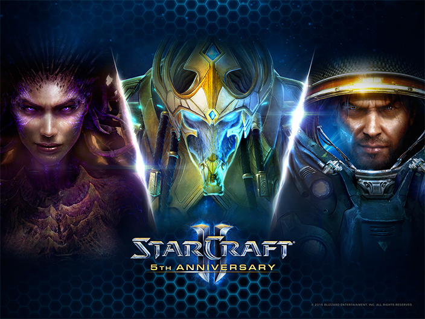

《星际争霸II》（英语：StarCraft II，港台译作“星海争霸II”）是玻璃渣爸爸暴雪娱乐发行的一款即时战略游戏。是《星际争霸》的续作，2010年7月27日全球同步上市（中国大陆为2011年3月29日）。游戏于目前支持Microsoft Windows和Mac OS X平台。整个《星际争霸II》将由已发布的游戏《自由之翼》，以及两个资料片《虫群之心》与《虚空之遗》组成。
|  | |
|---|---|
| 类型 | 科幻、即时战略 |
| 平台 | Windows和Mac OS X |
| 开发 | 暴雪娱乐 |
| 发行 | 台湾、香港、澳门：智凡迪
中国大陆：网易 |
| 发行日 | 全球：2010年7月27日
大陆：2011年4月6日 |
《星际争霸II》是一款即时战略游戏，通过俯瞰的视角模式观阅整个战场并对玩家的军队下达指令，最终目标就是击败战场上的对手们。游戏中单人剧情战役主要是扮演人类的角色来进行故事，但玩家可以在多人对战模式中选择《星际争霸II》中的三个独特种族：星灵、人类以及异虫。
每个种族都拥有独特的单位；这些单位都在战场上各自扮演着自己特定的角色。配合不同的单位来组成一支多元化的军队将带领走上胜利之路。
在玩家指挥下最基本的单位便是工作单位，太空工程车、探测机、工虫。它们将采集用来扩展玩家的基地、发展单位和部队所需的资源，同时它们也可用来建造建筑。更进阶的单位将于玩家的基地满足特地需求后开放，例如建造某个建筑或研发某种科技。
在多人对战中，通过歼灭敌人所有的建筑或对方先行投降来取得胜利。
《星际争霸II》取消了传统的局域网方式，要对战的话只能登录暴雪官方的BattleNet 2.0，也就是说只有正版用户才能享受线上对战服务。想要玩《星际争霸II》，玩家必须先注册一个暴雪战网账号并在此账号上建立一个《星际争霸II》角色。此角色将记录玩家的所有成就、排名和其他游戏相关资料。战网上有两种基本多人对战模式，排名赛与非排名赛。
星际争霸II的编辑器能够自定游戏的战役、地图，也可以制作游戏模组。它比《魔兽争霸3》的编辑器更复杂，这是暴雪第一次在编辑器中内置mod编辑的功能。
暴雪宣称，编辑器能够像魔兽争霸3那样创建英雄单位进行RPG模式。在Blizzcon 2009上，暴雪展示了新编辑器的能力，比如它能够通过改变用户界面将魔兽争霸3的物品系统加入游戏中，还能用第三人称视角进行游戏。
暴雪还改变了自定地图的发行方式。以前的地图存储在本地文件中，而现在用户只能使用战网上那些发布了的地图。在战网上，地图/mod被限制为5个文件最多共20MB的大小，每个文件不能超过10MB。虽然现在的编辑器能自定更多的游戏内容，但战网的限制却可能减少地图的数量。除非能有一个第三方的地图发布工具。
以宗教为政治核心的种族，人数不多，使用高科技在宇宙间建立自己的殖民地，曾经被萨尔那加（X'el Naga）-一个拥有如上帝造物能力的种族统治，之后星灵驱逐萨尔那加人，并陷入内战（永世之战）。最后整合了宗教，创造出了卡拉圣典，并将所有星灵的心灵连接起来。那些不愿臣服于卡拉圣典的星灵遭到流放，称为黑暗圣堂武士。异虫的主宰（the Overmind），以虫海战术和永无止尽的攻击，摧毁星灵的主星艾尔（Aiur）。最后星灵的执行官-塔萨达以同归于尽的方式，杀死主宰，虽然主宰死了，但在艾尔上的异虫还是非常多。被击败的星灵，不得不与被其驱逐千年之久的黑暗圣堂武士合流，以收复他们所失去的母星。
未来世界中，人类成立了一个统一的组织——地球联合理事会以管理全人类的事务。地球联合理事会挑选了大量的刑事犯、政治犯以及幽能基因变种者组成地球移民远征军，以冬眠的形式下，分别搭乘四艘移民船舰前往外太空，寻找适合居住的星球，原本预定一年航程，却在命运的作弄下持续航行，数年后四艘移民船里其中一艘因引擎融毁而坠毁，其余三艘分别降落在莫瑞亚、塔桑尼斯以及尤摩扬三颗行星，并逐渐建立了繁荣的殖民地，而这些地球人的远房亲戚们又被称作“泰伦”。经过数次工会战争，塔桑尼斯最终取得了各个殖民地的主导权，并组建成一个独裁专制的政府─泰伦联邦。公元2499之后，阿克图尔斯·蒙斯克领导的克哈之子推翻泰伦联邦创立泰伦帝国，然而后来的事实证明这只是一个比前任更加独裁与腐败的政权。
当异虫第一次抵达科普卢星区时，主宰是所有异虫的感知中枢，对主宰的绝对服从形成了异虫一贯的社会格局。主宰通过一种阶级式的感知传输来控制着每一只虫的行为。而这个阶级的顶层则由脑虫组成，每只脑虫授命直接掌管某一大片虫群。脑虫的指令则由宿主轮流负责传达，以此来直接控制和指挥那些漫天盖地的异虫单位。尽管主宰的首要目标是吸收和同化星灵这种高等生物，但它却在人类身上发现了尚未被利用的潜能。在俘虏了拥有强大幽能的人类战士莎拉‧凯瑞甘之后，主宰把她异化成了一个绝无仅有的新生物：刀锋女王。但主宰在入侵艾尔行星时被星灵摧毁，刀锋女王则威胁黑暗教长-泽拉图消灭了残存的脑虫。从那以后，她便开始了对异虫的全面统治。并且在刀锋女王的带领下，异虫变的将近无敌状态，统治了科普卢星区。
《星际争霸II》的故事发生在《星际争霸：母巢之战》后的第四年。
吉姆·雷诺所领导的革命军一直在为推翻蒙斯克的帝国而进行一次次战斗；然而一个昔日的伙伴——泰凯斯·芬利突然来访并且打乱了他的生活。泰凯斯·芬利曾经与吉姆有过合作，不过在一次行动中泰凯斯被帝国逮捕，吉姆·雷诺却趁机逃走了；重逢时泰凯斯告诉吉姆他是因为在“被转移到新福尔松的途中赤手空拳干掉了好几个的守卫”才逃了出来；并且提议和吉姆一起去抢夺星灵的神器碎片，因为一个叫做莫比斯基金会的研究机构里面有些“书呆子”愿意出大价钱购买，而他一向是“科学的守护神”。
吉姆相信昔日的伙伴，二人经过多次战斗，陆续从星灵的守护者塔达林手中夺取了多个神器的碎片；在抢夺神器的过程中，刀锋女王凯瑞甘率领异虫卷土重来，她也在寻找这些神器，不过每次都被机警的吉姆抢先得手；战斗期间，吉姆的星灵好友圣堂武士泽拉图突然出现并且留下了一块记忆水晶，从水晶的记忆中雷诺看到了泽拉图解读萨尔那加神殿中的预言后所看到的未来景象，按照预言的描述，创造他们的萨尔那加人将会归来消灭他们；一股堕落的黑暗力量制造出一个新的种族——异虫与星灵的混合体。在未来的景象中堕落者消灭了人类；在人类的势力杀死凯瑞甘之后奴隶了异虫；在堕落者的影响之下整个银河燃烧殆尽，并且星灵也将作为最后的抵抗力量而全军覆没；最后泽拉图告诉雷诺刀锋女王凯瑞甘不能死亡，因为凯瑞甘或许可以带领异虫战胜被奴隶的命运，从而成为解救整个银河的希望。
随着最后一块神器碎片即将到手，雷诺发现泰凯斯背后的买家——莫比斯基金会的实际拥有者是蒙斯克的儿子瓦伦里安，瓦伦里安为了证明自己是个合格的皇位继承人而准备了一个周密的计划：如果所有神器碎片重新组装成神器的话，将拥有对异虫的毁灭性力量，而这种力量将可以将凯瑞甘重新恢复成人类；瓦伦里安想以此打败刀锋女王。
尽管遭到战友的反对，雷诺还是说服了他们；并且选择了继续与瓦伦里安合作，最终运用神器的力量击溃了异虫的进攻；当雷诺找到奄奄一息的凯瑞甘时，泰克斯终于显露出他那不为人知的另一面；他找到雷诺的真正原因是因为“和魔鬼做了一笔交易”，杀死凯瑞甘，他就可以获得“自由”了。
雷诺最终阻止了泰凯斯行凶并将其击毙，从而成功解救了刀锋女王，《星际争霸II》三部曲之第一部《自由之翼》由此结束。
《虫群之心》的游戏情节围绕虫族的首领刀锋女王凯瑞甘展开，在《自由之翼》的结尾，雷诺使用一个古老的萨尔那加神器终于击溃了异虫的进攻，将凯瑞甘恢复成人类；失去了领袖人物的异虫破裂为数个虫群分布在克普鲁星区上，一个异虫的寄生女王扎加拉更是想取代凯瑞甘成为新的首领。
王储瓦伦里安为了确定凯瑞甘有多少部分回复到人类，将凯瑞甘隔离在研究所内进行很多实验和调查，而吉姆·雷诺陪伴在凯瑞甘左右并不时给予其重要的支持和鼓励。然而蒙斯克派幽灵特务诺娃偷袭了研究所，吉姆不幸被逮捕，蒙斯克随即对外宣称已经将吉姆处决。为此，凯瑞甘踏上对蒙斯克的复仇之路，又在泽拉图的引导下回到虫群的诞生地，再次变身刀锋女王，重掌虫群各势力，并在数日后救出被囚禁的吉姆。
然而吉姆无法接受再次成为刀锋女王的凯瑞甘，却也无法下手杀死凯瑞甘，只得宣告两人分手。
凯瑞甘为了削弱泰伦帝国的力量，登上了泰伦帝国的科学研究设施:天矛太空站，但是当她突破外层进入设施时，却见到了塔达林星灵、混合体与莫比斯基金会的纳鲁德博士，她发现纳鲁德博士其实就是杜兰并与他战斗，当纳鲁德博士临死前声称他已经复活了萨尔纳加埃蒙。最后当凯瑞甘与异虫进攻克哈时，因为凯瑞甘使异虫部队按兵不动，让瓦伦里安疏散人民，吉姆看到后决定出动休伯利安号帮助凯瑞甘。在海伯利昂号的支持下，凯瑞甘攻入皇宫，却不幸被蒙斯克使用神器压制了。关键时刻吉姆挺身而出将神器启动装置给破坏，让凯瑞甘得以处决蒙斯克。
蒙斯克死后，凯瑞甘与吉姆站在蒙斯克的皇宫上眺望。凯瑞甘转头向吉姆道谢，深情的望着他边飞向天空中的利维坦，而吉姆则是脸上带着笑容对她说"我的荣幸，亲爱的。一直都是。"
后来在结局前，凯瑞甘放弃了人性、身份，以及心爱的男人，率领异虫前往银河深处对抗堕落的萨尔纳加埃蒙。
当年主宰率领着异虫大军入侵了星灵母星-艾尔，迫使星灵放弃艾尔从此颠沛流离，然而星灵年轻大主教-阿塔尼斯费尽了千辛万苦终于集结了星灵黄金舰队准备反攻艾尔，不料就在进攻前夕，黑暗教长泽拉图前来警告阿塔尼斯，表示真正敌人堕落萨尔那加-埃蒙即将回归，若不正视这威胁的存在，宇宙将面临毁灭的命运，但阿塔尼斯还是决定以收复艾尔作为优先目标，在战斗的过程中星灵原本认为艾尔异虫在主宰死后群龙无首变成野生状态，没想到虫群中竟然有混源体进行有系统的战术指挥，这让阿塔尼斯和泽拉图吃惊不已，随后埃蒙强大的黑暗力量更入侵了星灵心智精神网络-卡拉，瞬间控制了艾尔上大部分星灵，包含了阿塔尼斯大主教、瑟兰迪斯执行官，由于泽拉图属于尼拉辛姆黑暗圣堂武士，自古以来他们的族人不愿与卡拉作链接，所以心智并未受到埃蒙的影响，因此泽拉图立刻率队前去拯救阿塔尼斯，希望在他还没被埃蒙控制前斩断与卡拉链接的神经索，结果为时已晚泽拉图被迫与阿塔尼斯展开对决，为了斩断阿塔尼斯的神经索，泽拉图最后牺牲了自己，在临终前告诉了阿塔尼斯，萨尔那加的神器-星钥石是拯救宇宙的重要关键。之后阿塔尼斯带领剩下幸存的星灵同胞，启动古老方舟舰-亚顿之矛并带着仅存的同胞赶紧逃出艾尔，准备寻求更多盟友的支持，壮大反抗的力量，与埃蒙决一死战！ 到达克哈星后，莫比斯部队也来抢走星钥石，阿塔尼斯便跟自治联盟合作击退他们。取得在克哈星上跟自治联盟一起夺回被莫比斯部队抢走的星钥石后，乘着亚顿之矛旅程上拯救被埃蒙控制的异虫包围的尼拉辛姆星灵;启动长久封印的净化者;帮助塔達林的阿拉纳克争夺领主王位并放下双方的对立战在同一阵在线。在战力完整之下，星灵的四个派系所组成的达兰议会重回艾尔对抗埃蒙即将觉醒的混源体、被埃蒙控制的虫群和黄金舰队，最后说服暂时脱离控制的黄金舰队切断与卡拉的链接，埃蒙的精神因此被放回虚空，战胜后达兰议会在艾尔上重建家园。
然而埃蒙还活在虚空中，位于奥纳的刀锋女皇凯瑞甘发送信号给阿塔尼斯跟雷诺，他们率领部队到奥纳与凯瑞甘会合，他们组成联军对抗埃蒙。战争结束后带领达兰议会与人类的自治联盟进行许多次的和平会谈。
与原作类似，星际争霸II在游戏内容方面广受赞誉，特别是其新特性和游戏叙事模式。但是批评的观点认为星际2去除了原作中一些相当优秀的内容，比如缺乏局域网对战以及限制玩家游戏区域等等。并且《星际争霸II》60美元的高昂售价，以及对于硬件配置的高要求，也造成了许多玩家的不满。而且暴雪为了平衡性，持续减少单位功能，导致调整后的某种族过于强势或弱势，使游戏质量下降，目前在各大玩家群体都引起了论战。
本作的单人战役内容非常丰富而有趣，玩家可以使用资金来购买各兵种的升级项目，甚至购买比普通单位更强的"佣兵"，并且在任务中可以获得星灵和异虫的研发点数，能在实验室中开发出新的科技能力，能够自由选择战役进行的顺序（优先攻打哪颗星球）等等，都使得本作战役的可玩性非常高并广受赞誉。
2010年8月3日，暴雪宣布《星际争霸II》发布的第一天就售出了100万份，两天之后又售出了50万份。因此，它也是世界上销售最快的策略类游戏。[24]在第一个月的销售中，星际争霸2在全球共售出300万份拷贝
从发行开始，星际争霸II就快速成为了电竞的主要比赛项目之一，包括了韩国GSL、OSL、SPL、WCG，欧美MLG 、IPL、Dreamhack，中国大陆NSL，以及暴雪自己举办的BWC、Blizzcon等等众多赛事都使用了星际争霸II做为比赛项目，也因此带动全球即时战略游戏与电子竞技的发展。